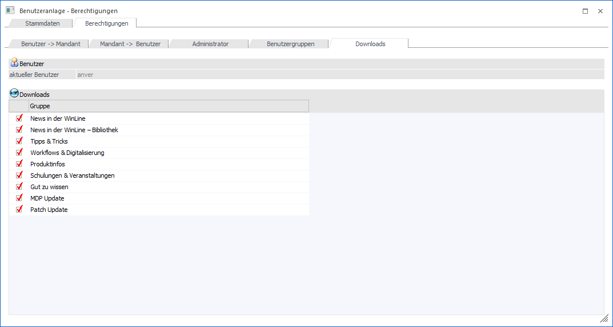
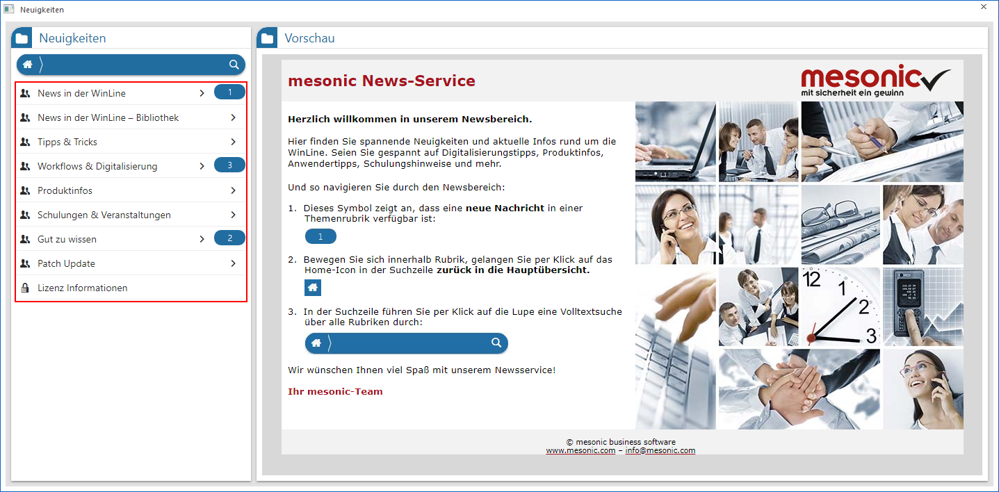
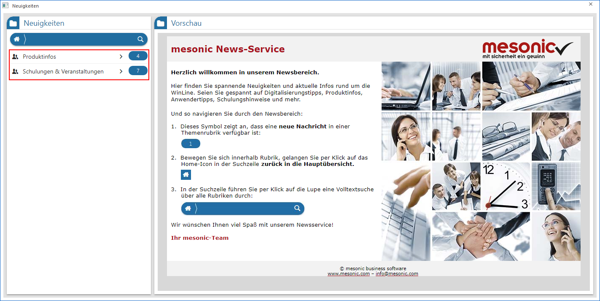
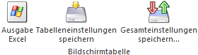

Benutzeranlage - Register "Berechtigungen - Downloads"
Im Unterregister "Downloads" kann festgelegt werden, welche Bereiche für den jeweiligen Benutzer in dem Fenster "Neuigkeiten" angezeigt werden sollen.

Benutzer

Ø aktueller Benutzer
An dieser Stelle wird der aktuell gewählt Benutzer angezeigt. Für diesen werden die folgenden Einstellungen getätigt.
Download
Das Fenster "Neuigkeiten" gliedert sich in die Bereiche…
ü News in der WinLine
ü News in der WinLine - Bibliothek
ü Tipps & Tricks
ü Workflows & Digitalisierung
ü Produktinfos
ü Schulungen & Veranstaltungen
ü Gut zu wissen
ü MDP Update
ü Patch Update
… deren Darstellung durch Aktivieren der Checkboxen für den jeweiligen Benutzer "freigeschalten" werden kann.
Beispiel
Wird für einen Benutzer die Berechtigung für alle Bereiche gesetzt, so stehen im Fenster "Neuigkeiten" auch alle Bereiche zur Verfügung:

Werden hingegen für den Benutzer der Lohnverrechnung z.B. nur die Bereiche "Produktinfos" und "Schulungen & Veranstaltungen" freigeschaltet, so stehen eben nur diese in den "Neuigkeiten" zur Verfügung.

Tabellenbuttons

Ø Ausgabe Excel
Durch Anwahl des Buttons "Ausgabe Excel" wird der Inhalt der Tabelle an Microsoft Excel übergeben.
Ø Tabelleneinstellungen speichern
Die Spalten einer Tabelle können grundsätzlich an beliebige Positionen verschoben, bzw. in der Breite entsprechend angepasst werden. Durch Anwahl des Buttons "Tabelleneinstellungen speichern" werden die Einstellungen benutzerspezifisch gespeichert und bei dem nächsten Aufruf des Programmpunktes wieder vorgeschlagen.
Ø Gesamteinstellungen speichern
Im Gegensatz zu "Tabelleneinstellungen speichern" können mit "Gesamteinstellungen speichern" mehrere Tabellenaufbauten gespeichert und nach Wunsch geladen werden. Zusätzlich werden Sonderfunktionen der Tabelle (z.B. "Spalte gruppieren") ebenfalls bei der Speicherung bedacht.